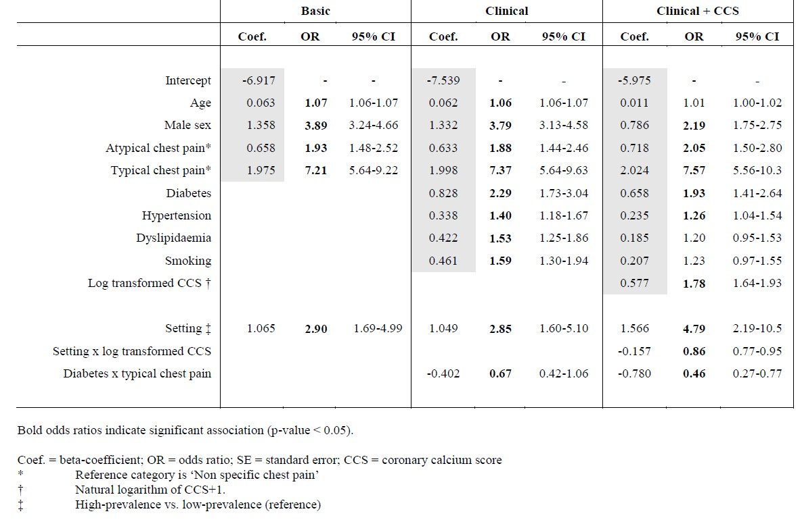

Calculate 2012 CAD2 Basic PTP for obstructive CAD
Source:R/cad_consortium_ptp.R
calculate_cad2_2012_basic_ptp.RdThis function returns a patient's pre-test probability (PTP) of obstructive coronary artery disease based on the 2012 CAD Consortium 2 (CAD2) basic model.
Arguments
- age
Input integer to indicate the age of the patient.
- sex
Input integer 0 or 1 to indicate the sex of the patient.
0 stands for Female
1 stands for Male
- chest_pain
Input integer 1 to 3 to indicate the chest pain characteristics of the patient.
1 stands for the patient having typical chest pain.
2 stands for the patient having atypical chest pain.
3 stands for the patient having non-anginal or non-specific chest pain.
Value
A numeric value representing the patient's PTP for obstructive CAD based on the 2012 CAD Consortium 2 (CAD2) basic model.
Details
The predictive model is based on patients from 18 hospitals in Europe and the United States.
The 2012 CAD Consortium 2 (CAD2) PTP models are as follows:
CAD Consortium 2 (CAD2) pre-test probabilities (PTP) of obstructive coronary artery disease model taken from Tessa Genders et. al. from British Medical Journal is licensed under CC BY 4.0.